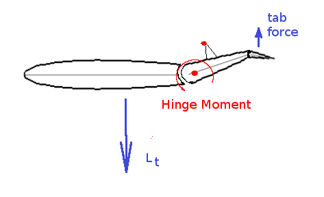
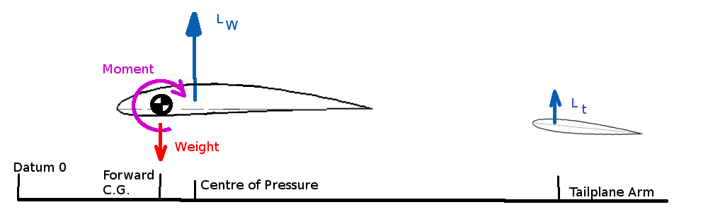
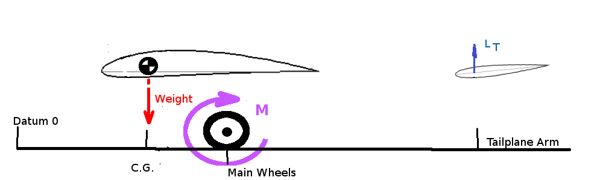

WEIGHT AND BALANCE
As well as having a maximum weight of an aircraft that determines performance, the location of the centre of the mass (center of gravity, c.g.) will also affect the performance of the vehicle. There will be a maximum aft position for the c.g., if the aircraft is loaded so that the c.g. is aft of this point the flight path will be unstable and diverge. There will also be a limiting forward poistion. If the aircaft is loaded so that the c.g. is forward of this position then the pitch control (elevator, etc.) will not produce sufficient moment to maintain a balance for level flight or be able to produce sufficient moment to rotate the aircraft for take-off.
Both limiting c.g. positions will need to be determined relative to a datum position on the aircraft fuselage. Typically the zero datum location is the firewall or tip of nose cone. These limiting positions can be found by calculation of moment balances either on the ground or in flight.
MAXIMUM REAR C.G. LOCATION
Clearly the most rearward position cannot be behind the main undercarriage for a nose-wheel configuration, however the stability of moments in flight will be the most likely criteria determining this position.
For steady level flight the moments about the c.g. of the aircraft must be zero.
$$M=0=L_w(x_{cg}-x_{cp})-L_t(x_{tail}-x_{cg})$$
where $L_w$ is the lift of the wing and fuselage, $L_t$ is the lift of the tailplane, $x_{cp}$ is the position of the center of pressure due to wing lift, $x_{tail}$ is the position of the tailplane center of pressure and $x_{cg}$ is the position of the centre of gravity. All positions being measure from the datum point.
As center of pressure changes position as lift changes it is more convenient to use the aerodynamic centre for the wing lift point of application.
$$M=0=M_{ac}+L_w(x_{cg}-x_{ac})-L_t(x_{tail}-x_{cg})$$
For stable flight any disturbance due to gusts must produce a restoring moment to rotate the aircraft back to its original position. Thus gusts that increase angle of attack or lift must also produce a negative moment. Thus,
$${∂M}/{∂L}<0\text" or "{∂M}/{∂α}<0$$
As lift is directly proportional to angle of attack both conditions are interchangeable for stability.
If a postive gradient occurs then the aircraft will be unstable and continue to diverge from its flight path. The limiting condition will be, ${∂M}/{∂α}=0$, or in non-dimensional notation, ${∂C_M}/{∂α}=0$, where $C_M=M/{1/2ρV^2Sc↖{-}$ and $S$ is the planform area of the wing, $V$ is the aircraft speed, $ρ$ is the air density and $c↖{-}$ is the wing mean aerodynamic chord.
If the c.g. position is set so this zero gradient results then the aircraft will have neutral stability. This will be the limit c.g. position (Neutral Point). c.g forward of this position produces a negative gradient hence stability, c.g. aft of this position produces a positive gradient and instability.
Writing the moment equation in non-dimensional terms gives,
$$C_{Mac}+C_{Lw}{(x_{cg}-x_{ac})}/{c↖{-}}-C_{Lt}{S_{tail}}/S{(x_{tail}-x_{cg})}/{c↖{-}}=0$$
where $S_{tail}$ is the planform area of the tailplane and $C_{Lt}$ is the tailplane lift coefficent.
Thus for stability
$${∂C_M}/{∂α}={∂C_{Mac}}/{∂α}+{∂C_{Lw}}/{∂α}{(x_{cg}-x_{ac})}/{c↖{-}}-{∂C_{Lt}}/{∂α}{S_{tail}}/S{(x_{tail}-x_{cg})}/{c↖{-}}=0$$
Assuming a linear variation of lift with angle
$$C_{Lw}≈C_L={∂C_L}/{∂α}α+C_{L0}\text" and "C_{Lt}={∂C_{Lt}}/{∂α}α_{tail}+C_{L0tail}$$
As the tailplane is behind the main wing it will be subject to the downwash from the main wing. Angle of attack at the tailplane will be reduced by a downwash angle.
$$α_{tail}=α-ε$$
and there will be an efficiency correction, η, due to tailplane position and fuselage and wing wake influences
$${∂C_{Lt}}/{∂α}={∂C_{Lt}}/{∂α_{tail}} {∂α_{tail}}/{∂α}={∂C_{Lt}}/{∂α_{tail}}(1-{∂ε}/{∂α}) \text" and "{∂C_{Lt}}/{∂α_{tail}}=η({∂C_L}/∂α)_{tail} $$
as moment about the aerodynamic centre is constant
$${∂C_{Mac}}/{∂α}=0$$
and simplyfing notation is often introduced to the moment balance equation such that,
\[\table l_t, \text"- distance from tailplane aerodynamic center"; , \text" to wing/fuselage aerodynamic center"; l_t=(x_{tail}-x_{ac})≈(x_{tail}-x_{cg}),\text" "; V_H=l_t/{c↖{-}}S_{tail}/S,\text"- Tail Volume coefficient"; {∂C_L}/{∂α}=C_{Lα}\text", "{∂C_M}/{∂α}=C_{Mα}\text", "({∂C_L}/{∂α})_{tail}=C_{Ltα}, \text"- Force, moment gradients." \]
Therefore
$$C_{Mα}=C_{Lα}{(x_{cg}-x_{ac})}/{c↖{-}}-ηC_{Ltα}V_H(1-{∂ε}/{∂α})=0$$
The distance from the c.g. to the aerodynamic center can be found from the above equation once the geometry and aerodynamic properties of the wing and tailplane are known.
The location of xcg that gives $C_{Mα}=0$ and thus the stability limit is called the neutral point.
$$x_{cg}/{c↖{-}}=x_{ac}/{c↖{-}}+{C_{Ltα}}/{C_{Lα}}ηV_H(1-{∂ε}/{∂α})= x_{np}/{c↖{-}}$$
If the c.g is forward of the neutral point the aircraft should be statically stable and a static margin can be found as
$$K_n=x_{np}/c↖{-}-x_{cg}/c↖{-}$$
Note that in most cases the c.g. is well forward of the neutral point and in front of the aerodynamic centre which promotes dynamic stability. Thus means a download on the tailplane is required to balance the moments.
STICK FREE EFFECTS
The above calculation of neutral point assumes a rigid position of the tailplane and is thus termed the stick fixed neutral point. In practice the tailplane or elevator angle is changed depending on aircraft speed to trim the aircraft. As lift is a function of velocity then varing $C_L$ is required for varying velocities and hence variations in angle of attack, $α$, will occur. To maintain $C_M=0$, ie. trimed flight at differing speeds, then its is also required that there be variations in tailplane lift.
In order for the pilot to maintain the tailplane lift directly a stick force would need to be applied to create the hinge moments required.
This is not practical for long duration flight, so trim tabs are added to maintain the elevator position but with stick force reduced to zero.

The load on the tab will balance the elevator hinge moment but will also reduce the overall tailplane load. The amount of trim deflection required will change with different aircraft speeds, so at different speeds $C_{Lt}$ will be reduced in proportion to the speed hence angle of attack. Flying with trim (stick free) rather than using direct stick force (stick fixed) will result in the following change in tailplane lift for a required elevator deflection,
$$C_{Lt}=a_{tail}α_{tail}-b_{trim}δ_{trim}+C_{L0tail}+C_{Lte}$$
where $a_{tail}=({∂C_L}/{∂α})_{tail}$ with no trim tab defelection.
$b_{trim}=({∂C_L}/{∂δ_{trim}})_{tail}$, rate of change of tailplane lift due to trim tab deflection
$C_{L0tail}$ tailplane camber effect and $C_{Lte}$ elevator setting contribution to tailplane lift.
Thus
$$C_{Lt}=a_{tail}α_{tail}(1-b_{trim}/a_{tail} δ_{trim}/α_{tail})+C_{L0tail}+C_{Lte}$$
$$C_{Ltα}=a_{tail}(1-b_{trim}/a_{tail} δ_{trim}/α_{tail})$$
For simplicity, the trim tab rate is assumed to be linear thus the ratios are assumed to be constant.
$$(1-b_{trim}/a_{tail} δ_{trim}/α_{tail})=F=\text"constant"$$
$$C_{Ltα}=Fa_{tail}$$
The constant ($F$) is called the stick-free factor with values ranging from 0 to 1. All moving tailplanes or stabilators have values of stick-free factor close to 0.
So for the stick-free condition the neutral point will be,
$$x_{np}/c↖{-}=x_{ac}/c↖{-}+FC_{Ltα}/C_{Lα}ηV_H(1-{∂ε}/{∂α})$$
This stick free neutral point will be further forward, toward the front, of the aircraft as compared to the stick fixed point.
Values of $η,ε,F$ are difficult to predict as they are produced by second order flow effects which may be non-linear. Flight testing may be required to identify these parameters.
MAXIMUM FORWARD C.G. LOCATION

The forward c.g. limit will be controlled by the effectiveness of the tailplane. Once a maximum tailplane lift is reached the $C_M=0$ balance cannot be maintained. If a further forward location of the c.g. is used the tailplane lift will not be sufficient and the aircraft will nose dive.
In flight this leads to the following situation,
$$-M = L_w(x_{cp}-x_{cd(fwd)})+L_{t(max)}(x_{tail}-x_{cg(fwd)})=0$$
For the tailplane $L_t(max)$ occurs when $C_{Lt}(max)$ is reached.
Due to control deflections (e), ignoring trim, tailplane lift components are
$$C_{Lt}=C_{Ltα}α_{tail}+C_{L0tail}+C_{Lte}$$
where $C_{Lte}={∂C_{Lt}}/{∂e}e$
In coefficient form the moment equation becomes,
$$-C_M=C_L(x_{cp}/c↖{-}-x_{cg(fwd)}/c↖{-})+C_{Lt(max)}S_{tail}/S(x_{tail}/c↖{-}-x_{cg(fwd)}/c↖{-}) = 0$$
$$-C_M=C_L(x_{cp}/c↖{-}-x_{cg(fwd)}/c↖{-})+C_{Lt(max)}V_H=0$$
for normal tailplane arms $x_{cp}-x_{cg}≈x_{ac}-x_{cg}≪x_{tail}-x_{cg}$.
As all the distances to the the C.G. are positive and if the aircraft is in level flight then a postive $C_L$ will be required so to obtain $C_M=0$ requires $C_{Lt}$ to be the largest negative lift coefficient available from the tailplane ($C_{Lt}(max)$).
This c.g. position is speed dependent and the location will be at a maximum distance from the nose when the aircraft is at minimum speed, stall speed. At this speed $C_L=C_{L}(max)$.
Thus maximum forward location to balance $C_M$ based on flight conditions is
$$x_{cg(fwd)}/c↖{-}=x_{ac}/c↖{-}-{∣C_{Lt(max)}∣}/{∣C_{L(max)}∣} V_H$$
As well as the above requirement for balance in flight, there is also a requirement on the elevator effectiveness for take-off.

For take off, the elevator is required to produce sufficent moment to rotate the aircraft to a flying angle of attack. As the C.G. for standard nosewheel aircraft is infront of the main wheels this may be a more critical requirement on elevator effectiveness.
In this case, ignoring the main wing lift contribution as the aircraft is on the ground undertaking a take-off roll,
$$-M=W(x_w-x_{cg(fwd)})+L_{t(max)}(x_{tail}-x_w)=0$$
where $x_w$ is the location of the main undercarriage measured from the datum.
$$-C_M=W/{1/2ρV^2S}(x_w/c↖{-}-x_{cg(fwd)}/c↖{-})+C_{Lt(max)}(x__{tail}/c↖{-}-x_w/c↖{-}) =0$$
here $W/{1/2ρV^2S}$ is the required CL for take-off and again a maximum download is required on the tailplane, so that
$$x_{cg(fwd)}/c↖{-} = x_w/c↖{-}=x_w/c↖{-}={∣C_{Lt(max)}∣}/C_{L(to)}(x_{tail}/c↖{-}-x_w/c↖{-})$$
This forward C.G. location will depend on the take-off weight of the vehicle and will be furthest from the nose at MTOW. In most cases this condition will be the limiting case for forward C.G. position.
CENTRE OF GRAVITY LIMITS
From the above calculations a graph can be constructed showing the envelope in which the centre of gravity of the vehicle must reside for all phases of flight.
A typical centre of gravity chart is shown below,
Reference : Cessna 172 Pilots Operating Manual, Cessna Aircraft Co. Wichita, Kansas, USA.
For each flight a pilot in command is required to determine the weights of passengers, luggage and fuel. These will be used in a moment calculation to find the take-off and landing C.G. positions. These can be plotted on the above graph to verify that C.G positions during flight will lie within the acceptable bounds of the envelope.
An estimate of total moments about datum will give
$$W_{total}×x_{cg}=W_{empty}×x_{ew}+W_{pilot}×x_{p1}+W_{passenger}×x_{p2}+W_{luggage}×x_l+W_{fuel}×x_f$$
so that
$$x_{cg}={{Σ↖N}↙{i=1} W_i×x_i}/{{Σ↖N}↙{i=1} W_i$$
A
typical example with a pilot weighing 176 lb,
two rear seat passengers, 169lb and 120lb
respectively and 100lbs of luggage
stowed in baggage area 1 will be calculated
* Pilot seat is adjustable, set at 37 in
rear passenger location 73 in
** Baggage area 1 limit 120lb
located at 95 in
baggage area 2 empty.
Aircraft basic empty weight 1642 lb @ 38 in
30 Gals of fuel weighting 190 lb @ 47 in
A typical load sheet and C.G. Chart would be as follows
GOOD TO GO